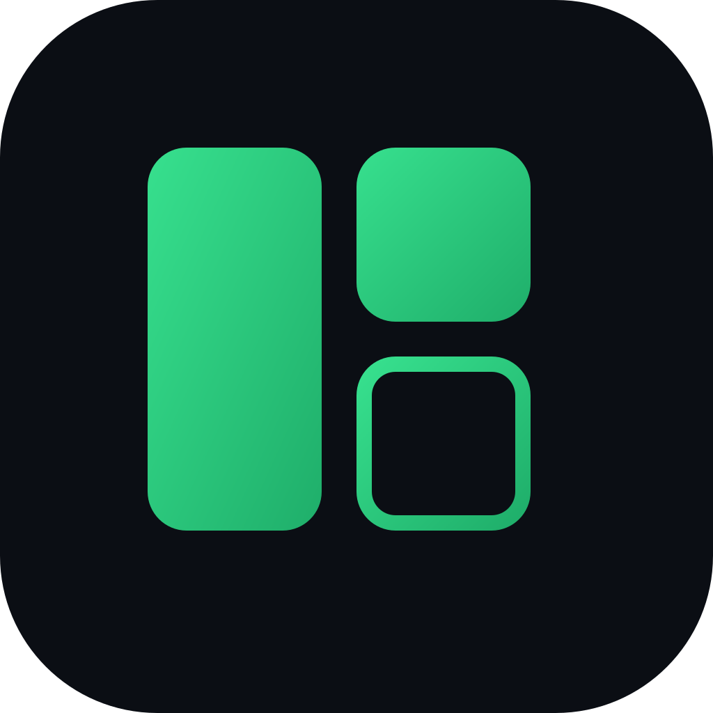

MosaroPolitique de confidentialité
Extension Chrome « Mosaro » · Éditeur : Marius YAO · En vigueur depuis le 30 septembre 2026
En bref
Mosaro ne collecte, ne reçoit et ne vend aucune de vos données. Vos pages, boards et liens restent dans votre navigateur. L'éditeur n'exploite aucun serveur pour cette extension, n'y intègre aucun outil d'analyse, de publicité ou de suivi, et ne charge aucun code distant.
Données que l'extension manipule
| Donnée | Pourquoi | Où elle est conservée |
|---|---|---|
| Vos pages, boards, liens (titre, adresse, description, icône, couleur, ordre) et réglages | Afficher et organiser votre page « Nouvel onglet » | Sur votre appareil, dans chrome.storage.local |
| Images de fond que vous ajoutez | Personnaliser l'arrière-plan | Sur votre appareil uniquement (jamais synchronisées) |
| Sauvegardes automatiques | Vous permettre de restaurer vos données | Sur votre appareil, dans chrome.storage.local |
| Adresse et titre de l'onglet actif | Uniquement lorsque vous lancez « Sauvegarde rapide » (Ctrl+Maj+Y ou bouton de la barre d'outils) | Enregistrés comme lien dans vos données locales |
| Favoris Chrome | Uniquement lorsque vous cliquez sur l'import et acceptez la demande d'accès de Chrome | Copiés une fois dans vos données locales ; vos favoris Chrome ne sont pas modifiés |
Connexions réseau
- Détection du titre d'un lien (facultative). Elle n'a lieu que si vous cliquez sur « Activer les titres automatiques » dans la fenêtre d'ajout de lien et acceptez la demande de Chrome. Ensuite, quand vous ajoutez un lien, votre navigateur télécharge cette page (sans cookies ni identifiants) pour lire son titre et sa description, comme s'il la visitait. Le site concerné voit donc une requête venant de votre connexion. Rien n'est envoyé à l'éditeur ni à un tiers.
- Icônes de sites. Elles sont fournies par le service d'icônes intégré à Chrome, en local.
- Aucune autre connexion. Les photos de fond, les icônes et les polices sont incluses dans l'extension.
Synchronisation facultative
La synchronisation est désactivée par défaut. Si vous l'activez dans les réglages, vos pages, boards, liens et réglages (hors images de fond) sont copiés dans chrome.storage.sync, le service de synchronisation de votre compte Chrome. Ils sont alors traités par Google selon ses propres conditions, pas par l'éditeur. Vous pouvez la désactiver à tout moment.
Partage, vente, publicité
Aucune donnée n'est vendue, partagée, transférée à des tiers, utilisée pour de la publicité, du profilage ou pour établir une solvabilité. Les données ne servent qu'à faire fonctionner les fonctions décrites ci-dessus.
Conservation et suppression
Vos données restent sur votre appareil tant que vous ne les supprimez pas. Désinstaller l'extension ou effacer les données du navigateur les supprime. Les exports (JSON, HTML, CSV) sont des fichiers que vous créez et gérez vous-même.
Vos droits
L'éditeur ne détenant aucune de vos données, il n'a rien à consulter, corriger ou effacer à votre place : tout se fait directement dans l'extension (modification, export, suppression). Pour toute question, contactez mosaro@nexustradinghub.com.
Enfants
L'extension ne s'adresse pas spécifiquement aux enfants et ne collecte aucune donnée à leur sujet.
Modifications
Si cette politique change, la date d'entrée en vigueur ci-dessus sera mise à jour. Tout changement concernant la collecte de données serait annoncé dans la fiche de l'extension avant son application.
Privacy Policy
“Mosaro” Chrome extension · Publisher: Marius YAO · Effective 30 September 2026
In short
Mosaro does not collect, receive or sell any of your data. Your pages, boards and links stay in your browser. The publisher runs no server for this extension, includes no analytics, advertising or tracking tools, and loads no remote code.
Data the extension handles
| Data | Purpose | Where it is kept |
|---|---|---|
| Your pages, boards, links (title, address, description, icon, color, order) and settings | Display and organize your New Tab page | On your device, in chrome.storage.local |
| Background images you add | Customize the background | On your device only (never synced) |
| Automatic backups | Let you restore your data | On your device, in chrome.storage.local |
| Address and title of the active tab | Only when you run “Quick Save” (Ctrl+Shift+Y or the toolbar button) | Saved as a link in your local data |
| Chrome bookmarks | Only when you click the import button and accept Chrome's access prompt | Copied once into your local data; your Chrome bookmarks are not modified |
Network connections
- Link title detection (optional). It only happens if you click “Enable automatic titles” in the Add link dialog and accept Chrome's prompt. After that, when you add a link, your browser downloads that page (without cookies or credentials) to read its title and description, as if visiting it. The site therefore sees a request from your connection. Nothing is sent to the publisher or to any third party.
- Site icons. They are provided locally by Chrome's built-in favicon service.
- No other connections. Background photos, icons and fonts ship inside the extension.
Optional sync
Sync is off by default. If you turn it on in the settings, your pages, boards, links and settings (except background images) are copied to chrome.storage.sync, your Chrome account's sync service. They are then handled by Google under its own terms, not by the publisher. You can turn it off at any time.
Sharing, selling, advertising
No data is sold, shared, transferred to third parties, used for advertising, profiling or creditworthiness. Data is used only to provide the features described above.
Retention and deletion
Your data stays on your device until you delete it. Uninstalling the extension or clearing browser data removes it. Exports (JSON, HTML, CSV) are files you create and manage yourself.
Your rights
Since the publisher holds none of your data, there is nothing for it to access, correct or erase on your behalf: everything is done directly in the extension (edit, export, delete). For any question, contact mosaro@nexustradinghub.com.
Children
The extension is not specifically directed at children and collects no data about them.
Changes
If this policy changes, the effective date above will be updated. Any change affecting data collection would be announced in the extension's listing before it applies.